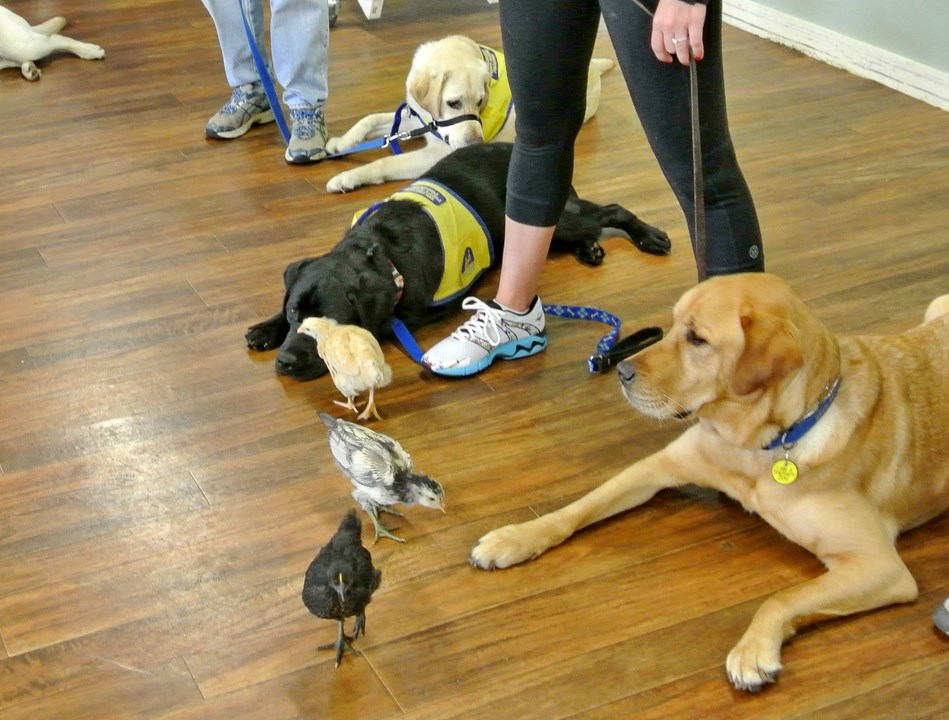
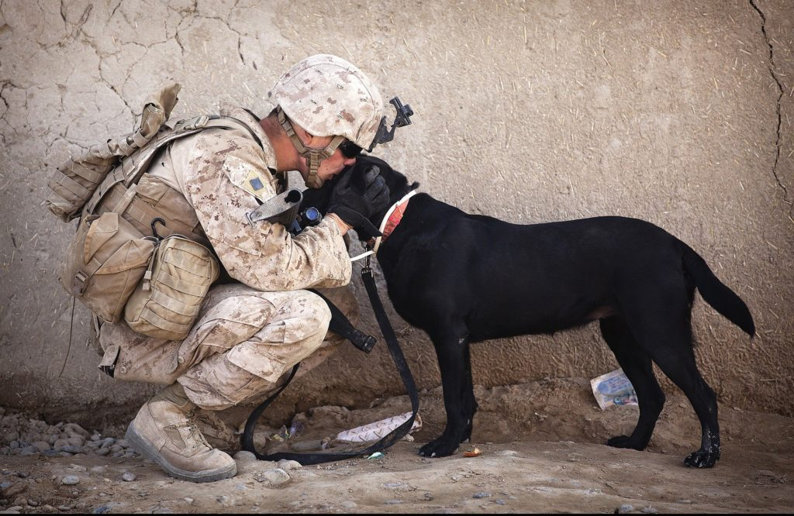
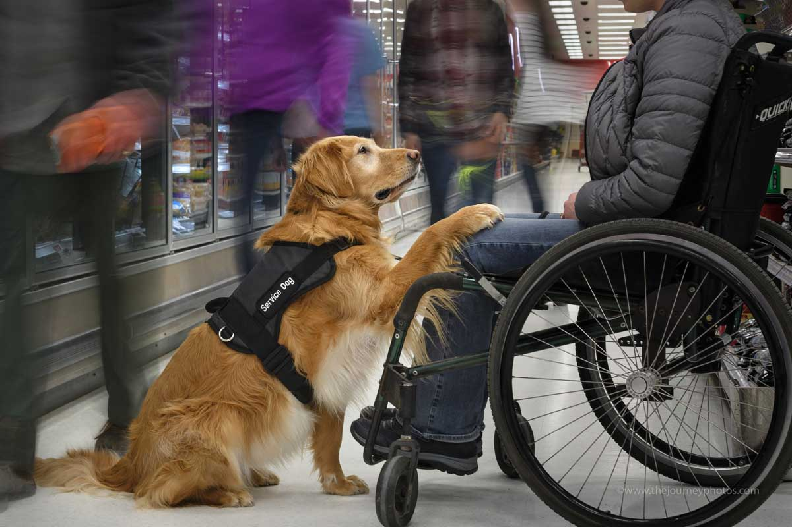
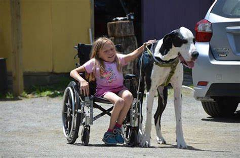

Disabilities



websites below where you can find more infromation related to these topics.

Many disabilities can benefits from the use of a service dog. Someone blind or with impaired vision would have a dog to help them cross streets or to get around obstacles. They might also retrieve objects for them. Someone with mobility issues might benefit from a dog that can help lean against them much like a cane and help retrieve objects. People with Type 1 diabetes can have a dog that can actually sense when their blood sugar is too high or low and can alert the owner. There is a dog for almost every type of disbility out there, all you need to do is ask.
Every type of dog (and other animal) is used as a service dog. Labrador Retrievers are the most commonly used. These dogs are usually seen as seeing eye dogs and mobility assistant dogs among others. Golden retrievers, German Shepherds, Poodles, and Great Danes are among the most common breeds used. All it takes is finding a dog with the correct temperament and the ability to be trained in the field it is needed. Shelter dogs are also a great choice as it gives them a new life and purpose.